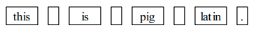

Pig Latin#
本节通过一个简化的 C 程序复习模块化开发和逐步求精的过程。模块化开发就是把一个程序分成多个模块的技术，回忆下 CS101 作业 1 中 soundex 的处理过程，模块通过一系列函数实现功能拆分。
通过该案例，我们也可以了解从 C++ 转到 C 的一些变化，例如，如何维护状态信息？如何保持状态的私有性？
任务说明#
Pig Latin 按照如下规则转换每个英文单词，从而创造一门新的语言：
如果单词以辅音开头，则将第一个元音字母前的所有辅音字符串移到末尾，并加上
ay如果单词以元音开头，则加上
way
例如，单词 scram 符合第一条规则，所以将 scr 移动到尾部并加上 ay，结果就是 amscray。单词 apple 符合第二条规则，所以直接加上 way，结果就是 appleway。
任务 1：实现交互程序#
程序执行时会提示用户输入一段文字，然后输出如下结果：
Enter a line: this is pig latin.
isthay isway igpay atinlay.
我们采用自顶向下实现，可以不用一开始就决定如何将程序分割成多个模块。在实现交互程序时，可以先假设有一个接口，能够将一行字符串转换成 Pig Latin：
/*
* Function: TranslateLine
* Usage: TranslateLine(line);
* ---------------------------
* This function takes a line of text and translates
* the words in the line to Pig Latin, displaying the
* translation as it goes.
*/
void TranslateLine(string line);
以抽象思维开发程序，我们已经能够实现程序的交互部分了。
💡Hint
int main(int argc, string args[]) {
printf("Enter a line: ");
string line = GetLine();
TranslateLine(line);
}
任务 2：实现 TranslateLine#
实现 TranslateLine 将转变抽象层级，此时我们作为开发者将提供上述接口。在这个层级上，问题依然复杂，需要进一步将问题拆解。
TranslateLine 需要做的工作大致可以分为 3 步：
如何将一个字符串拆分成独立的单词
按规则将每个单词转换成 Pig Latin
显示转换后的单词，并以换行符结尾
💡Hint
如果以容器的思想，如何拆分上述步骤？
C 虽然没有提供直接使用的容器，但使用动态数组，我们也能够完成同样的任务。这里为了简便起见，我们不需要存储每个单词，一旦翻译完成就立刻显示结果，并处理下一个单词。
回顾 CS101 中作业 2 的 search 程序，对单词的处理一般是通过 token 来完成的。比如，这样的输入行：
this is pig latin.
可以看作是以下 8 个 token 组成：

可以看出，除了单词，token 还包括一些标点组成的字符，在处理 token 时需要进行判断。这里我们假设有一个谓词函数接口 IsLegalWord 可以直接使用。
同样为了简便起见，我们提供了一份 C 版本的 tokenscanner 接口库。
函数 |
功能 |
|---|---|
|
初始化扫描器，以便从开头读取每个 |
|
返回下一个 |
|
如果扫描器到达末尾，返回 |
常用的编程习语可以参考如下的循环结构。其中，InitScanner 初始化后，GetNextToken 将能够获取第一个记号。如果还没有 AtEndOfLine，扫描器将会继续获取下一个记号。
InitScanner(line);
while (!AtEndOfLine()) {
token = GetNextToken();
... 处理 token 记号 ...
}
在 tokenscanner 的帮助下，我们进一步拆分了 TranslateLine 处理逻辑，将翻译的工作交给 TranslateWord 处理。
💡Hint
void TranslateLine(string line) {
InitScanner(line);
while (!AtEndOfLine()) {
string token = GetNextToken();
if (IsLegalWord(token))
token = TranslateWord(token);
printf("%s", token);
}
printf("\n");
}
任务 3：实现 IsLegalWord 和 TranslateWord#
完成 TranslateLine 的拆解后，我们的工作只剩下 token 处理的几个函数。
IsLegalWord 相对比较容易，我们只需要借助 ctype.h 接口提供的 isalpha 函数就能够判断 token 是否为有效单词。
💡Hint
bool IsLegalWord(string token) {
for (int i = 0; i < StringLength(token); i++) {
if (!isalpha(IthChar(token, i)))
return (false);
}
return (true);
}
TranslateWord 稍微复杂一些，根据规则你需要判断第一个元音字母的位置：如果位置为 0，则按照规则 1 处理；如果不为 0，则按照规则 2 处理。
那么如何判断元音字母呢？检查 strlib.h 接口，我们并没有发现现成的函数可以使用。此时，扩充该接口就很有必要了，因为判断元音的操作相当常见。
剩下的实现相对比较容易，合理使用 strlib.h 接口，我们可以完成这个任务。
💡Hint
string TranslateWord(string word) {
int vp = FindFirstVowel(word);
if (vp == -1) {
return (word);
} else if (vp == 0) {
return (ConcatString(word, "way"));
} else {
string head = SubString(word, 0, vp - 1);
string tail = SubString(word, vp, StringLength(word) - 1);
return (ConcatString(tail, ConcatString(head, "ay")));
}
}
int FindFirstVowel(string word) {
for (int i = 0; i < StringLength(word); i++) {
if (IsVowel(IthChar(word, i)))
return (i);
}
return (-1);
}
思考#
为什么
GetNextToken不需要提供line参数？循环结构中，
GetNextToken每次调用，都会从line的不同位置开始，这是如何做到的？如何避免外部程序调用我们拆分的这些辅助函数？
推荐阅读#
更多 C 和 C++ 的不同之处，可以参考 http://www.cs.ecu.edu/karl/4627/spr18/C.html